Installation requirements
Component | Requirement |
Python (The programming language used to run the app) | 3.10 + |
PySide6 (The library used for the graphical interface) | 6.5.0 + |
OpenCV (The library used for image processing) | 4.8.0 + |
NumPy (The library used for numerical operations) | 1.24.0 + |
Interface Overview
The Proteus interface is organized in a clear and practical way. When hovering over each function, a small explanation appears, which makes the layout easier to understand during use. The main window is divided into three sections in the left sidebar. The first section, Files / History, includes Open Image, Save Current Image, Clear, Undo, and Redo. The second section, View / Annotate, contains Pan, Brush, and ROI, along with the brush-size control and the options Clear Drawing and Clear ROI. The third section, Image Processing, groups the main processing tools into smaller categories: Pseudocolor with All, Red, Green, and Blue, as well as Merge Two Images; Sharpen / Binarize with Original, B/W Auto, B/W 128, and B/W Custom; Enhance with Power (Gamma), Invert, Blur & Divide, Denoise, and rotation options; and finally PCA, which includes PCA, PCA-SVD, Prev Band, and Next Band. On the right side of the window, the image canvas displays the loaded image and all processing results.
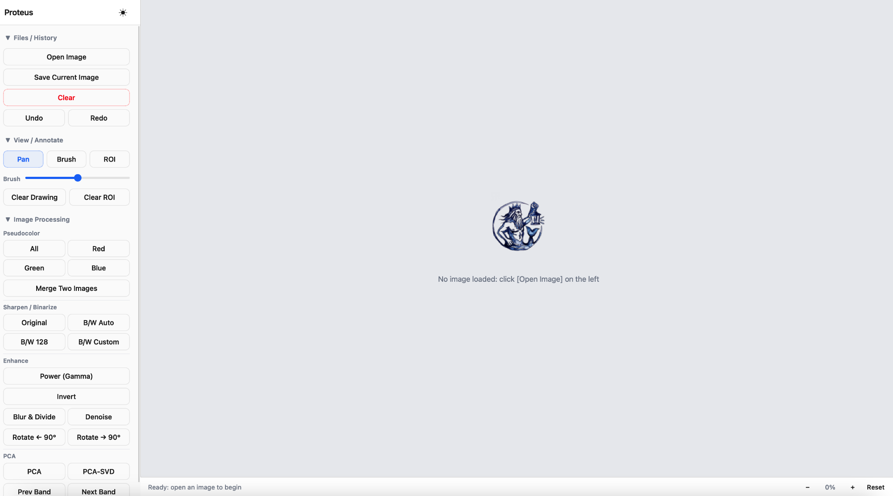
Work in Proteus begins by loading an image through Open Image in the Files / History section. Once the image appears on the right-hand canvas, it can be explored with Pan, annotated with Brush, or restricted to a selected area with ROI. Processing functions can then be applied from the Image Processing section, depending on whether the aim is visualization, enhancement, thresholding, or PCA-based analysis. If needed, previous steps can be reversed with Undo and restored with Redo. When the processing sequence is complete, the current result can be stored with Save Current Image.
Pan / Brush
Pan is the navigation mode of the canvas. It is used to move across the image, especially when working at a zoomed-in level. When it comes to brush, this tool is used for freehand marking directly on the image. It is intended for highlighting, annotation, or mask-like selection of visible features.
In this example, the Pan mode was used to move across the zoomed image and focus on the relevant area of the manuscript. After locating features of interest, the Brush was used to mark regions that appear to contain possible undertext. The brush size was set to its maximum value, although it can be adjusted with the slider depending on how broad or precise the marked area needs to be.
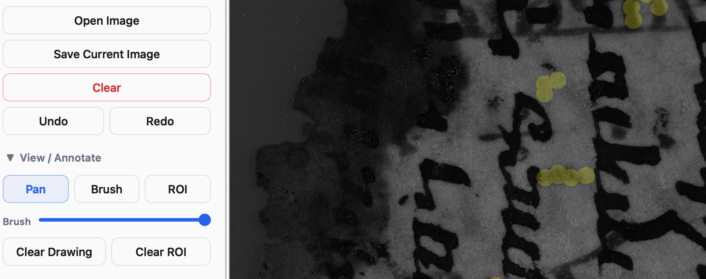
This makes it possible to move from simple navigation to a more targeted visual inspection of specific image regions.
Region of Interest
ROI stands for region of interest. It is used to define a specific rectangular area of the image as the main focus of inspection or analysis
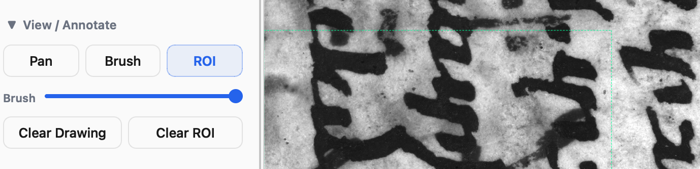
In this example, the ROI is marked by the visible green rectangle. This selection defines a restricted image area that can be treated as the main focus of inspection. Such a function is especially useful when only one portion of the manuscript needs to be examined more closely, for example a section with unclear writing, dense overlap, or features that appear relevant for further processing. This is particularly relevant for PCA, since the project description and code indicate that the selected ROI is automatically applied when PCA or PCA-SVD is performed. The ROI can be removed at any time with Clear ROI, allowing a new area to be selected when needed.
Image Processing
Pseudocolor
Pseudocolor is a visualization function that converts grayscale image data into a color image. This is done by first ensuring that the image is grayscale and 8-bit, and then applying a JET colormap. This step assigns colors based on brightness: darker areas turn blue, mid-range areas become green or yellow, and the brightest areas shift toward red. The result is a false-color image where intensity differences are much easier to see.
In Proteus, pseudocolor is therefore used to transform differences in grayscale intensity into color differences, which can make contrasts easier to inspect visually. In the interface, this group appears under Image Processing and includes the options All, Red, Green, Blue, and Merge Two Images.
The Red option applies pseudocolor only to the red channel of the image. In the code, the red channel is extracted from the color image and then passed through the same JET pseudocolor function. This means that the resulting visualization is based only on intensity values stored in the red channel. The same applies to the Green but uses only the green channel of the image before applying the JET colormap. This creates a pseudocolor visualization derived specifically from the green-channel information. The Blue option isolates the blue channel and applies the same pseudocolor transformation to it. Like the Red and Green modes, it does not use the whole grayscale image, but a single selected channel as the source for the color mapping.
In the example shown below, the original 365UV image from the PhaseOne MSI (Multispectral imaging) capture appears, while the second image shows the result after clicking All under Pseudocolor. The transformation does not change the image content itself, but remaps grayscale intensity values into color values. In this result, darker and lighter areas are redistributed into different color zones, which can make variation in the image easier to inspect visually.
Göttingen, Staats- und Universitätsbibliothek, Ms_Syr_23 S. 128v (bottom left)
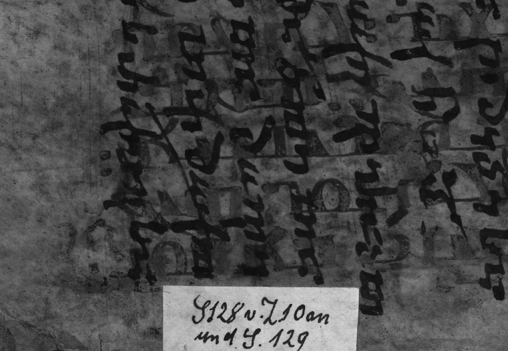
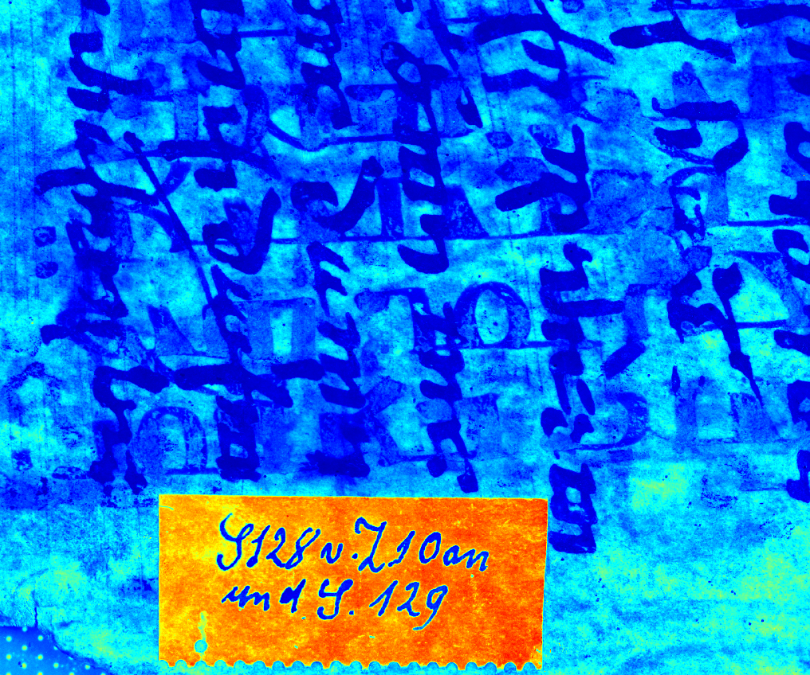
The example below shows the three channel-based pseudocolor views available in Proteus. From left to right, the results correspond to Red, Green, and Blue. These views make it possible to compare how the same image is rendered when different channel information is emphasized. In practice, this produces visibly different distributions of contrast and color across the fragment surface and can therefore support comparative visual inspection.
In the Red view, most of the image appears in dark blue, while the label at the bottom and a limited number of smaller zones stand out in warmer colors. Compared with the other channel-based results, this version is more restrained and highlights fewer regions across the page. The overall effect is a more selective distribution of strong contrast.
On the other hand, the Green view produces a much denser and more varied image. Here, both the parchment and the script are distributed across a broader range of warm and cool tones, which makes the page appear more visually active.
Compared with the Red result, this version emphasizes more of the fragment surface and reveals stronger tonal variation throughout the image. When it comes to the Blue, the view differs again from the two previous results. In this version, large portions of the fragment are rendered in strong red and orange tones, while the label at the bottom is separated sharply in dark blue.
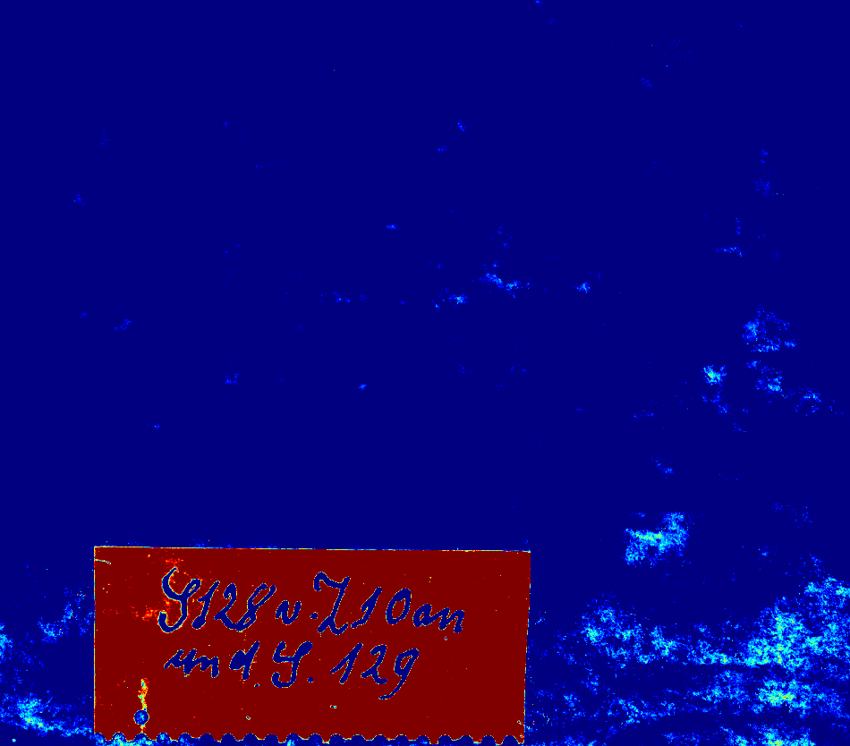
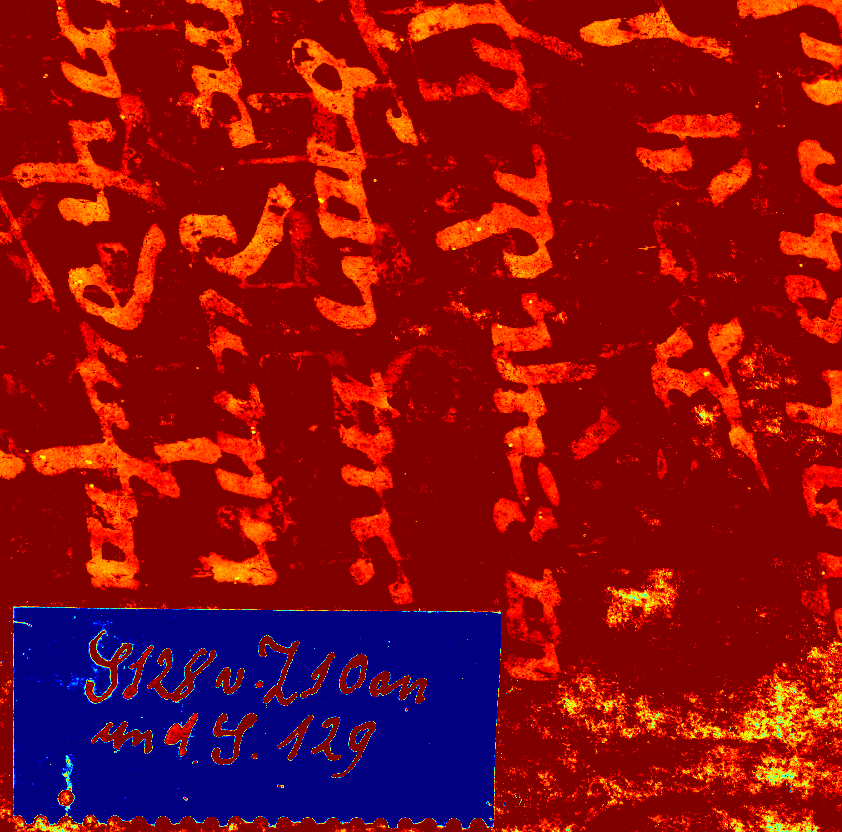
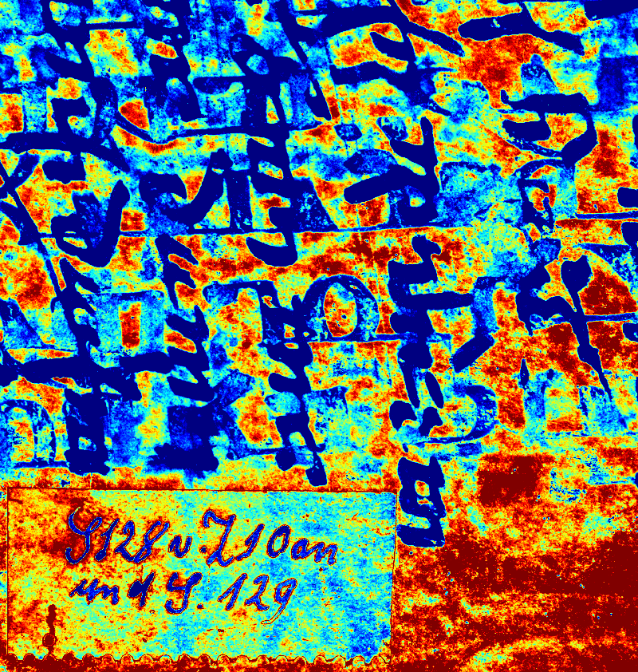
Göttingen, Staats- und Universitätsbibliothek,Ms_Syr_23 S. 128v (bottom left)
Merge two images:
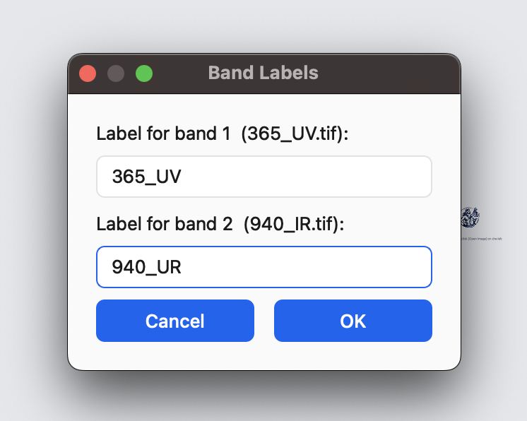
After selecting the two images for Merge Two Images, Proteus opens a Band Labels window. This dialog asks for a label for each selected file, here 365_UV.tif and 940_IR.tif, with example entries such as UV and IR shown in the input fields. The window therefore serves to assign clear names to the two bands before the merged result is created.
In the example below, the same manuscript fragment was selected from two different spectral bands of the MSI capture, 365 UV and 940 IR, and the dialog provides a simple way to identify these two inputs before the combined pseudocolor image is generated.
Proteus combines the two grayscale images into a single merged image with equal weighting and then applies pseudocolor. In the code, the two inputs are blended 50/50 before the JET colormap is applied. In this example, the All pseudocolor setting was used, so the merged output is displayed as one combined color-mapped image rather than as a single-channel view.
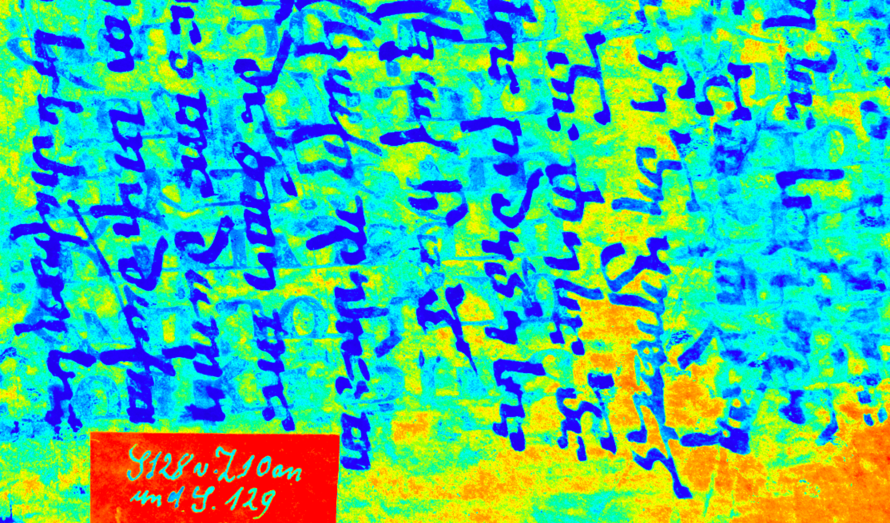
Göttingen, Staats- und Universitätsbibliothek, Ms_Syr_23 S. 128v
Sharpen / Binarize:
The Sharpen / Binarize section brings together one sharpening operation and three binary thresholding options.
Original applies unsharp masking. This is a sharpening technique in which image detail is enhanced by comparing the original image with a blurred version and adding the difference back to the original. In practical terms, this increases local contrast around edges and fine structures, producing a sharper appearance.
B/W Auto applies Otsu’s thresholding method. Otsu described this as an automatic threshold-selection procedure based on the gray-level histogram, designed to maximize the separability of the resulting classes. In this mode, the threshold is determined automatically rather than entered manually, so the conversion to black and white is data-driven.
B/W 128 applies binary thresholding with a fixed value of 128. In binary thresholding, pixels above the threshold are assigned the maximum output value, while the remaining pixels are set to zero. Here, the threshold does not adapt to the image but remains constant at 128, which makes the operation fixed rather than automatic.
B/W Custom applies the same kind of binary thresholding, but with a threshold value entered manually in a dialog window. Unlike B/W Auto, this option does not calculate the threshold from the image histogram. Unlike B/W 128, it is not restricted to a single preset value. Instead, it allows direct control over the threshold used for the black-and-white conversion.
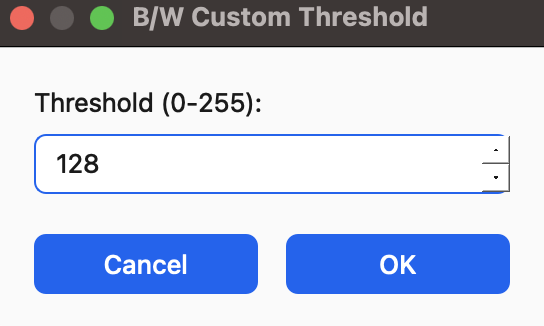
When this function is selected, a small dialog window appears in which the threshold can be entered on a scale from 0 to 255. In the example shown here, the displayed value is 128, but it can be changed before the operation is confirmed.
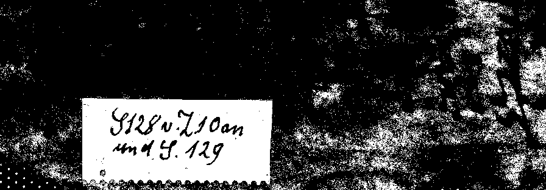
The example below shows the result of B/W Auto on the manuscript image. In this output, the image has been reduced to black and white through automatic thresholding.
Enhancement
Power
Power (Gamma) is an image-enhancement function based on a power-law transformation. The image values are temporarily normalized for the calculation, the selected gamma value is then applied, and the result is converted back to the standard 8-bit image range. The function therefore changes the tonal distribution of the image rather than its geometry or layout.
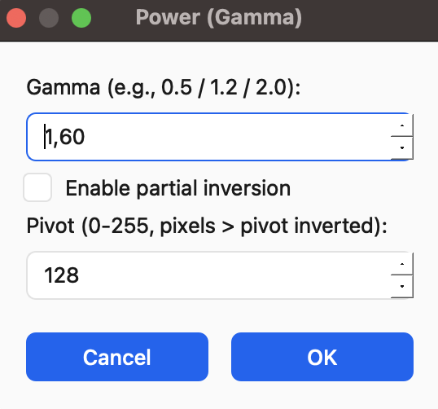
As the dialog window here shows, a gamma value can be entered directly, with examples such as 0.5, 1.2, and 2.0. The same window also includes an optional partial inversion setting and a pivot value between 0 and 255. If partial inversion is enabled, pixels above the chosen pivot are inverted after the gamma transformation.
Invert
Invert modifies the image by blending it with its inverted version: Dark areas become lighter and light areas become darker, but the strength of this effect depends on the selected alpha value. The inverted image is first created by reversing the pixel values, and the final result is then calculated through alpha blending between the original image and the inverted one. This means that the effect is adjustable rather than fixed: depending on the selected alpha value, the result can range from a very slight inversion to a full reversal of tonal values.
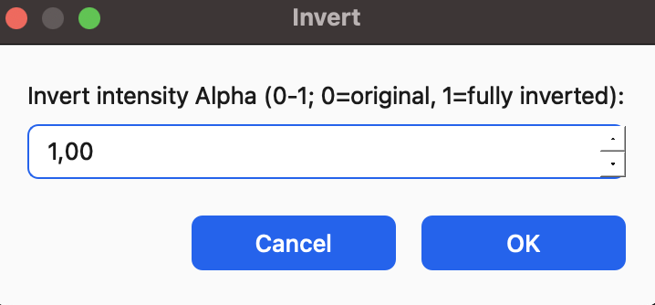
The window shows how the scale is defined: 0 corresponds to the original image, while 1 produces a fully inverted result. Intermediate values create a partial inversion by mixing the original image and its negative in different proportions.
Blur / Divide
It is a background-correction function that combines several operations into a single step. A Gaussian-blurred version of the image is first created and used as the divisor for the original image. The resulting image is then normalized to the 0–255 range and further processed with histogram equalization. In the implementation, the blur kernel size is automatically adjusted if necessary so that it is always odd, which is required for the Gaussian blur operation. For grayscale images, the procedure is applied directly to the image itself: the image is converted to floating-point values, blurred, divided by the blurred version, normalized, and equalized. For color images, the process is more restricted. The image is first converted to YCrCb, a color space that separates brightness from color, which means that the operation is applied to brightness values without directly changing the other color components. The adjusted luminance channel is then inserted back into the image.
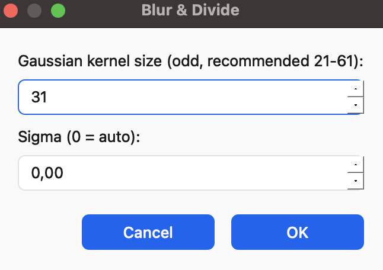
The window displays the parameters for the function. Two values can be entered before processing begins: the Gaussian kernel size and sigma. It indicates that the kernel size should be an odd number and recommends a range between 21 and 61. It also shows that a sigma value of 0 is treated as automatic. In the example displayed here, the kernel size is set to 31 and sigma to 0.00. These settings define the blur that is generated before the division, normalization, and equalization steps are carried out.
Denoise
This function applies a Gaussian denoising filter to the image. Its purpose is to smooth the image by reducing small-scale variation through Gaussian blur. This is controlled through two parameters: the kernel size and sigma. The kernel size defines the size of the filtering window, while sigma controls the spread of the Gaussian function, so together they determine how strong the smoothing effect will be. Larger values produce stronger smoothing. Unlike functions such as Blur & Divide, this is a more direct filtering step, since it applies Gaussian smoothing without the additional division, normalization, or equalization stages.
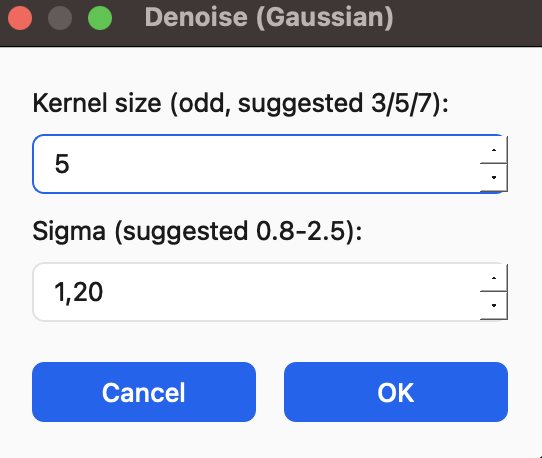
Here the parameter settings for Denoise (Gaussian) are displayed where two values can be entered before the filter is applied: the kernel size and sigma. It indicates that the kernel size should be an odd number and suggests values such as 3, 5, or 7, while sigma is suggested in the range 0.8–2.5.
Rotate
The Rotate function changes only the orientation of the image. Two buttons are available: Rotate ← 90° and Rotate → 90°. These apply a fixed rotation of 90 degrees either to the left or to the right. Unlike the enhancement functions, rotation does not modify tonal values, contrast, or color information, but simply changes the spatial position of the image.
PCA
PCA operates on a set of selected MSI band images after they have been loaded as grayscale images. The selected files may come from different spectral bands, such as UV to IR, but they are converted to grayscale before the PCA calculation is performed, hence, it is a multiband analysis. The implementation requires at least 3 input images and uses at most 16. All selected images must have the same dimensions, otherwise the operation stops with an error. An optional ROI can also be used; if one has been selected, it is taken into account when fitting the PCA. The function then stacks the images into a multiband array, centers the data by subtracting the mean, computes a covariance matrix, and performs eigen-decomposition. The resulting component scores are projected back onto the full image area and converted into image outputs. For display, Proteus keeps up to the first 8 principal components, each normalized to the 0–255 range. These component images are stored as separate result bands, which can then be browsed in the interface with Prev Band and Next Band.
After processing, the first principal component is shown immediately in the image area, while the remaining component images are stored in the background. Navigation through the resulting PCA images is then carried out with Prev Band and Next Band.
PCA - SVD
Proteus also provides a second PCA option, PCA-SVD (singular value decomposition). Like the standard PCA function, it requires at least 3 grayscale images, accepts at most 16, and requires all images to have the same size. It can also use a selected ROI. The difference lies in the calculation method. Instead of building a covariance matrix and computing its eigenvectors, this version reshapes the image stack as bands × pixels, centers each row, and performs singular value decomposition. The resulting components are then projected back into image form and normalized for display. As with the standard PCA function, up to 8 component images are returned and can be browsed band by band in the interface.
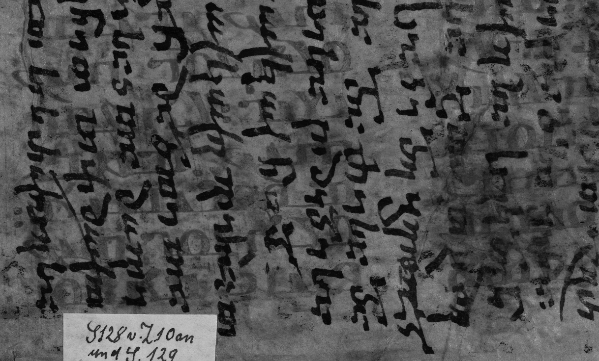
Göttingen, Staats- und Universitätsbibliothek, Ms_Syr_23 S. Fol. 128v (PCA)
The image shown above presents the result of standard PCA in Proteus using a sequence of MSI band images ranging from 385 nm UV to 850 nm IR. The selected inputs were 385 nm UV, 450 deep blue, 475 blue, 505 cyan, 535 green, 550 lime, 590 amber, 620 orange-red, 630 red, 660 deep red, 730 IR, and 850 IR. The displayed image is the first PCA output generated after the calculation.
The example shown below presents the PCA-SVD result for the same MSI set, extending from 385 nm UV to 850 nm IR. As in the previous case, the selected spectral bands of the same folio are combined into a single grayscale component image. In this output, the overtext is rendered in very light tones, while the undertext, together with the parchment texture, is redistributed across a narrower gray range. Compared with the standard PCA example, this produces a different tonal structure of the fragment and therefore a different visual emphasis on script.
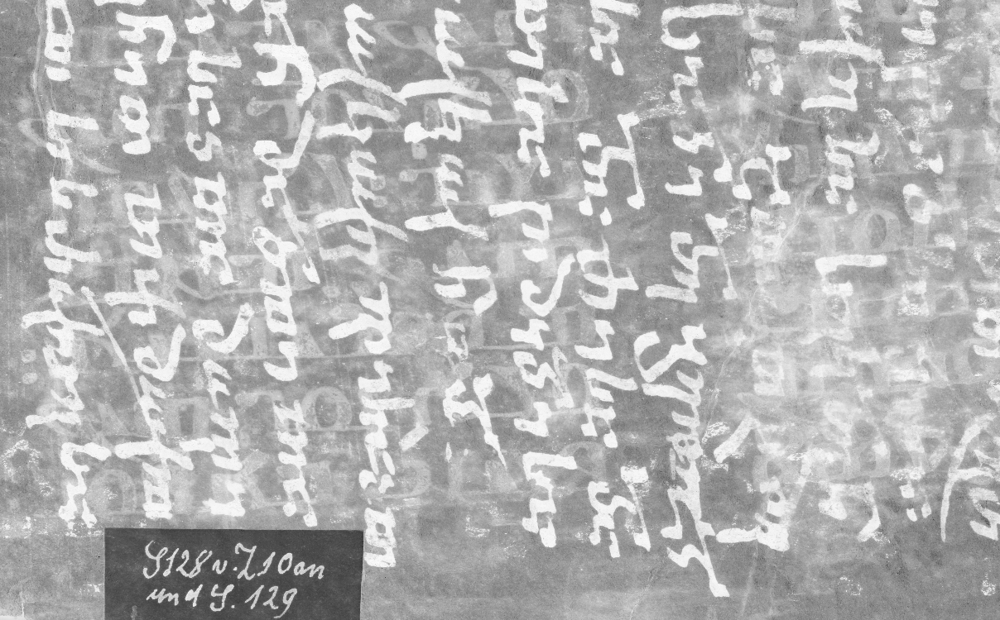
Göttingen, Staats- und Universitätsbibliothek, Ms_Syr_23 S. Fol. 128v (PCA SVD)
Overall, Proteus brings together a wide range of image-processing and visualization functions in a single interface, from basic enhancement and thresholding to multiband pseudocolor and PCA-based analysis. In this way, it provides a practical environment for exploring MSI images and comparing how different processing steps affect the visibility of script.
References
emanuskript. (n.d.). Proteus. GitHub. https://github.com/emanuskript/Proteus
OpenCV. (n.d.). Image thresholding. https://docs.opencv.org/4.x/d7/d4d/tutorial_py_thresholding.html
Otsu, N. (1979). A threshold selection method from gray-level histograms. IEEE Transactions on Systems, Man, and Cybernetics, 9(1), 62–66. https://engineering.purdue.edu/kak/computervision/ECE661.08/OTSU_paper.pdf
scikit-image developers. (n.d.). Unsharp masking. https://scikit-image.org/docs/0.25.x/auto_examples/filters/plot_unsharp_mask.html